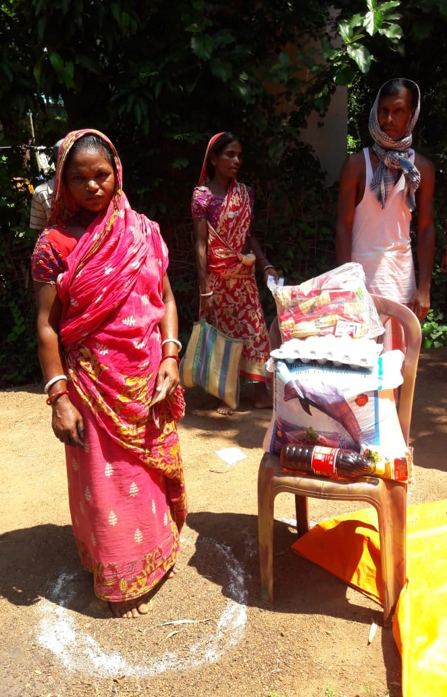
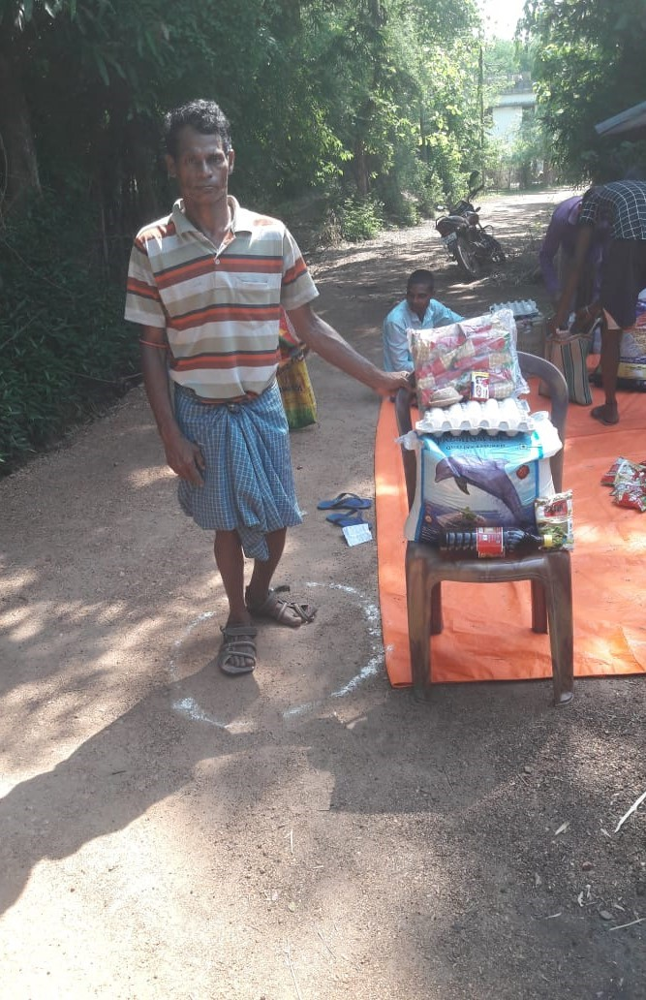

The distribution was carried out in two phases distributing food to 225 families in each phase. Phase one distribution was done on May 19th to 22. The second phase distribution was done from 7th June to 9th June.
A month’s ration for a family of 4 was distributed to 450 families, covering a total of 1981 people. The beneficiaries included BPL, APL families, and the ones who didn’t have ration cards and thus were unable to access the food provided by the government.
To ensure that the help is provided to the right section and to prepare the list to beneficiaries, we conducted proper surveys with the help of local volunteers and had made NOC signed from the pradhans of the gram panchayats.

The food kit consisted of:
| Product |
Quantity |
| Rice |
25 Kg |
| Dal |
3 Kg |
| Oil |
1 litre |
| Potato |
6 Kg |
| Onion |
5 Kg |
| Biscuits |
400 g |
| Soybean |
12 Kg |
| Salt |
1 Kg |
| Soap |
2 pcs |
| Eggs |
1 crate |

Funds Sources:
- Mrs. Mausumi Dasgupta started a personal fundraiser on social media platforms in the US.
- A fundraiser was raised from the GYWS Fb page. Professors of IIT KGP were contacted who contributed in huge amounts.
Purchasing and Distribution:
Food for the first 225 kits was bought, packed, and transported from Madhyamgram(near Kolkata) to Kharagpur by Mr. Koushik. The second lot of food kits of 225 families were purchased from Kharagpur itself.
A team of volunteers which included local villagers and members of gram panchayat coordinated by Mr. Mrinal Kanti Bhanja carried out the door to door distribution of food packets. Distribution of food was also done from the GYWS office and JVM in the Gopali area from where people collected the food kits.
Resource Persons:
Mrs. Mausumi Dasgupta, a resident of New Jersey- helped in raising funds from her friends and family in the USA and in India as well through FB fundraiser.
Mr. Koushik, a resident of Madhyamgram and a friend of Mrs Dasgupta- purchased, packed, and transported food kits from Kolkata to Kharagpur.